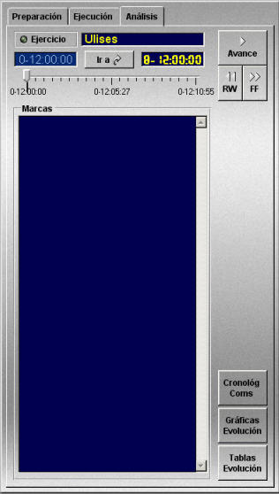
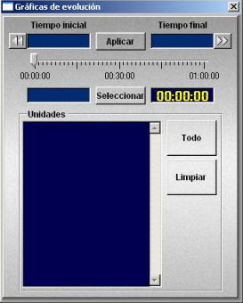
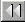
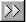
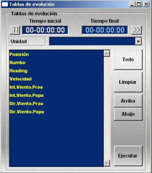
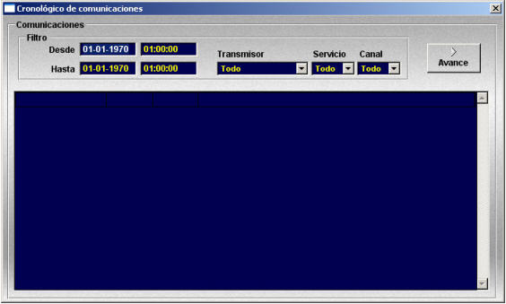

Análisis de Ejercicios
La función de análisis de ejercicios consiste en la repetición de la ejecución de un ejercicio previamente grabado. Durante esta repetición, el instructor puede avanzar y retroceder en el tiempo, y observar la evolución del ejercicio así como cada una de las acciones ejecutadas por los alumnos en sus respectivos puestos. Además proporciona acceso a las herramientas para Análisis de Ejercicios (Tablas de Evolución, Gráficas de Evolución y Cronológico de Comunicaciones).
En la Pantalla de Presentación Cartográfica del Instructor, seleccionando la solapa Análisis en el Área de Preparación, Ejecución y Análisis de Ejercicios, se accede al control de la función de Análisis de Ejercicios.

Esta función se inicia con la carga de un fichero de análisis mediante la opción de menú Archivo → Ejercicio → Análisis → Cargar. Esta opción presenta una ventana con la lista de ficheros de análisis existentes, en la que se puede seleccionar uno de ellos para su repetición.
Los ficheros de análisis se graban durante la ejecución de un ejercicio (ver la función Grabar ejercicio que se describe en el apartado Ejecución de Ejercicios).
Una vez cargado el fichero de análisis, tanto en el campo Ejercicio de la solapa Análisis, como en el de la solapa Ejecución aparece el nombre del ejercicio grabado en ese fichero.
Para llevar a cabo el análisis del ejercicio, el instructor dispone de las funciones que se especifican a continuación.
Funciones accesibles desde la solapa Ejecución:
Funciones accesibles desde la solapa Análisis:
El estado del ejercicio se indica mediante un led que se enciende (en verde) cuando el ejercicio en repetición está en marcha y se apaga cuando está en pausa o no hay ejercicio en repetición.

Mediante este diálogo, el instructor puede seleccionar un intervalo de tiempo incluido en el ejercicio cargado para análisis, para el cual se representará en la presentación Cartográfica la trayectoria seguida por determinadas unidades.
Los campos Tiempo Inicial y Tiempo Final muestran el principio y el fin del intervalo de tiempo correspondiente al gráfico de evolución que se va a generar.
Cuando se pulsa el botón  el campo Tiempo Inicial muestra la hora de comienzo del ejercicio.
Cuando se pulsa el botón  el campo Tiempo Final muestra la hora de finalización del ejercicio.
También es posible especificar un intervalo tiempo concreto para generar el gráfico. Este tiempo se puede introducir de forma manual en los dos campos inferiores o mediante la barra situada encima de estos campos. Una vez establecido el intervalo, al pulsar el botón Seleccionar se actualizan los campos Tiempo Inicial y Tiempo Final con los valores introducidos.
La lista contiene las unidades seleccionadas para generar el gráfico. Pulsando el botón Todo la lista muestra todas las unidades que participan en el ejercicio. Seleccionando una unidad en la lista y pulsando el botón Limpiar, la unidad seleccionada desaparece de la lista.
Una vez seleccionado el intervalo de tiempo y las unidades implicadas, se pulsa el botón Aplicar para generar el gráfico de evolución correspondiente.

Mediante este diálogo, el instructor puede seleccionar un intervalo de tiempo incluido en el ejercicio cargado para análisis, y seleccionar las variables de la lista mostrada que serán incluidas como columnas de la tabla de evolución. También puede seleccionar el orden de las columnas, ordenándolas en la lista.
Al pulsar Ejecutar se generará un informe de texto, conteniendo los datos de la tabla de evolución.

Esta ventana presenta la lista de comunicaciones que se han producido durante la ejecución del ejercicio. Estas comunicaciones se pueden reproducir seleccionándolas en la lista y pulsando el botón Avance. Esta lista se puede filtrar eligiendo las opciones deseadas en la zona Filtro, como se describe a continuación: